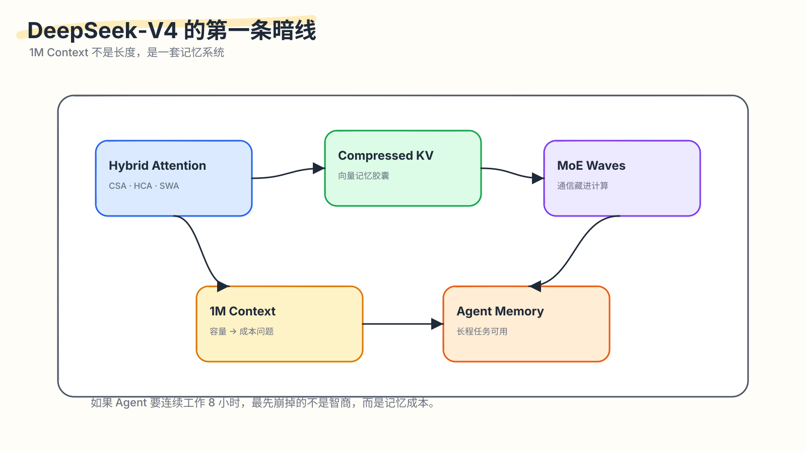
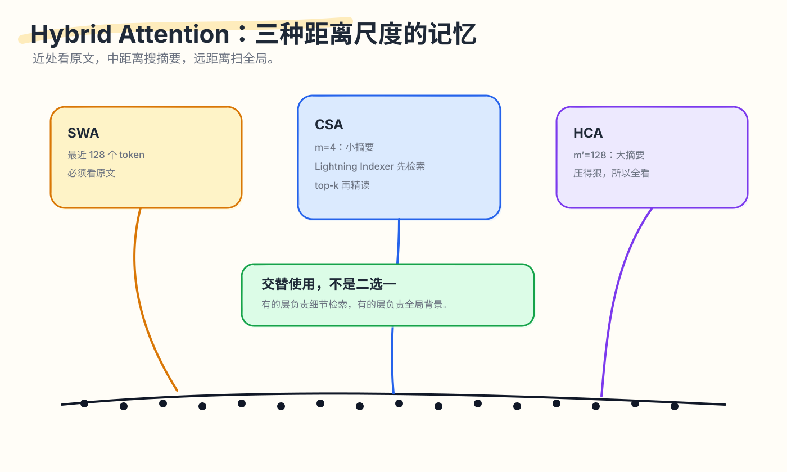

DeepSeek-V4 暗线之一：1M Context 不是长度，是一套记忆系统

如果一个 Agent 要连续工作 8 小时，读完一个代码仓库、几十轮终端输出、几百次工具返回，智商通常还没到瓶颈，记忆已经先变贵。
这个说法听起来有点反直觉。我们平时说一个模型“支持 1M context”，很容易把它想成一个更大的输入框。输入框大了，能塞更多文档，问题似乎就解决了。但长上下文的难点会从容量转到边际成本：每一步生成都要带着历史继续往前走。
对自回归模型来说，历史放进去以后还会反复参与生成。模型每生成一个新 token，都要利用前面的历史状态。上下文越长，历史状态越重。一个 Agent 如果要生成几千、几万 token，这笔成本就从一次性门票变成每走一步都要交的路费。
所以，DeepSeek‑V4 的 1M context 先别急着问“是否塞得下一百万 token”。更关键的问题是：
这一百万 token 怎么存，怎么读，怎么在每一步生成时不把系统拖死。
官方技术报告给出的数字很直接：DeepSeek‑V4 系列包含 V4‑Pro 和 V4‑Flash，二者都支持 1M token context。V4‑Pro 是 1.6T 总参数、49B 激活参数；V4‑Flash 是 284B 总参数、13B 激活参数。(DeepSeek API Docs)
在 1M context 下，报告称 V4‑Pro 的单 token 推理 FLOPs 只有 V3.2 的 27%，KV cache 只有 10%；V4‑Flash 进一步降到 10% FLOPs 和 7% KV cache。足够说明 V4 设计的重心：把百万 token 上下文做成 Agent 任务里更可用的系统能力。(DeepSeek-AI)(Hugging Face)
这一篇只讲 V4 的第一条暗线：记忆。
这里的“记忆”要同时看 attention 和执行路径。长程 Agent 的记忆成本至少有两层：一层是历史怎么存、怎么读；另一层是每个输出 token 经过 MoE 层时，通信和计算怎么别互相等。前者解释 SWA、CSA、HCA，后者解释为什么 MoE wave 也要放进这一篇。
先把问题拆成七个具体问题：
- 普通 attention 为什么在 1M context 下撑不住？
- compressed KV entry 和人类摘要有什么区别？
- 为什么 CSA 要先压缩，再检索，再精读？
- 为什么有了 CSA 还要 HCA？
- 为什么最近窗口必须保留原文？
- MoE wave 属于执行调度，为什么也和长程 Agent 的记忆成本有关？
C/B <= Vcomp/Vcomm这个硬件公式到底在说什么？
1. 普通 attention 的问题：历史越长，每一步都越重
先用一个简单比喻。
假设你在修一个 bug。你面前有一叠便签。每张便签记录一个历史 token 的信息。普通 attention 的直觉是：每次你要写下一句话，都要回头翻这些便签，看看哪些和当前这句话有关。
便签只有几千张时，这件事可以接受。便签有一百万张时，问题就变了。桌面容量只是开始；真正麻烦的是你每写一个字都要在这堆便签里找线索。
对 Transformer 来说，历史 token 会留下 KV cache。KV cache 的作用是避免每一步都重新计算历史 token 的 key/value。但 KV cache 本身也要存储，也要被读取。上下文越长，KV cache 越大；每个新 token 对历史做 attention 时，历史越长，注意力计算也越重。
在长程 Agent 任务里，这个问题会被放大。Agent 会一边读、一边试、一边把新结果继续塞回上下文：
|
|
每一步都会把新信息加进上下文。上下文增长之后，后面的每个 token 都要面对更重的历史。
所以 1M context 的真正问题是边际成本：历史变长之后，每新增一个输出 token 的成本仍然要可控。
V4 的基本策略可以先压成三句话：
|
|
这就是 Hybrid Attention 的出发点。
2. V4 的记忆分层：SWA、CSA、HCA 分别解决不同距离的问题
DeepSeek‑V4 的 Hybrid Attention 主要由三种机制组成：
- SWA：Sliding Window Attention，保留最近窗口的原文 KV；
- CSA：Compressed Sparse Attention，把历史压缩后做稀疏检索；
- HCA：Heavily Compressed Attention，把历史更重度压缩后全局扫读。

先看它们分别解决什么问题：
| 机制 | 负责的距离 | 保留什么 | 付出的代价 |
|---|---|---|---|
| SWA | 最近现场 | 原文 KV | 窗口长度受限 |
| CSA | 中距离细节 | 4:1 压缩 KV + top-k 精读 | 依赖 indexer 召回 |
| HCA | 远距离背景 | 128:1 重压缩 KV | 细节损失更大 |
2.1 最近现场要看原文：SWA
最近 token 往往决定局部语法、变量名、括号、缩进、工具输出的最后一行。
比如代码里刚出现：
|
|
下一步生成什么，和最近几个 token 的字面形式强相关。再比如 shell 报错：
|
|
Agent 下一步要不要安装依赖，往往取决于最后这一行。这里如果只看摘要，很容易丢细节。
所以 V4 保留一个 sliding window。窗口内的 token 用未压缩 KV，类似“现场记录”。这个窗口不会无限增长，只负责最近一段。
一句话理解：
|
|
2.2 中距离历史要先召回：CSA
如果把每 4 个 token 压成一个 compressed KV entry，那么 1M token 会变成 250K 个 compressed entries。数量少了 4 倍，但每一步全看 250K 个 entry 仍然很贵。
所以 CSA 还要加一个检索过程。
CSA 的流程更像：
|
|
这里的本质是：
|
|
如果用读书比喻，CSA 更像你读书时做了很多索引卡片：卡片比原文短，查卡片比翻全书快；真正要回答问题时，先找卡片，再精读被选中的卡片。
2.3 远距离历史需要全局覆盖：HCA
CSA 有一个依赖：top-k 检索。如果 indexer 没召回某个重要片段，后面的 attention 就看不到。
HCA 的设计更粗，但更稳定。它每 128 个 token 压成一个 heavily compressed entry。压缩后 entries 数量很少，所以可以全看，而不必再赌一次 top-k 召回。
HCA 的作用偏向全局背景，逐字细节要交给别的路径：
|
|
CSA 像搜索。搜索能找到细节，但可能漏召回。HCA 像目录或章节摘要。目录很粗，但不太会完全丢掉“这本书有哪些部分”。这就是二者的互补关系：CSA 用召回换细节，HCA 用细节换覆盖。
2.4 交替使用，是为了让不同层承担不同记忆模式
V4 让不同层使用不同注意力模式。不同层交替使用 CSA 和 HCA。V4‑Pro 前两层是 HCA，后面 CSA/HCA 交替；V4‑Flash 前两层是 sliding-window，后面也交替使用 CSA/HCA。
Hugging Face 的解读也提到，V4‑Pro 的 61 层栈里，layers 0–1 是 HCA，layers 2–60 交替 CSA 和 HCA，末尾 MTP block 只走 sliding-window。(Hugging Face)
这更像多层网络里的分工：一些层更适合做细节召回，一些层更适合做全局背景融合。SWA 则像每层都带着的“现场记录”，负责最近上下文的字面精度。
3. compressed KV entry 到底是什么：给 attention 读的向量状态
这里是最容易误解的点。
很多人看到“压缩 KV”，会自然想到摘要：
|
|
但 compressed KV entry 是后续 attention 能继续使用的一组向量状态，人类直接读不到它。
假设有 4 个 token：
|
|
每个 token 都有一个 hidden state。V4 的 compressor 会从这些 hidden states 生成两类东西：
|
|
C 表示这个 token 想存进记忆里的内容。Z 表示压缩时这个 token 在不同维度上应该占多少权重。
最终 compressed KV entry 是几个 C 的加权融合。权重来自 Z 的 softmax。更准确地说，这里给的是逐维权重：同一个 token 在某些维度上权重大，在另一些维度上权重小。

一个玩具例子：
|
|
假设 softmax 后的逐维权重大概是：
|
|
那么 compressed entry 类似：
|
|
这里 ⊙ 是逐维相乘。最后得到的是一个新向量：
|
|
真实模型里维度远高于 3。你可以把它想成一张向量卡片。人读不懂这张卡片，但 attention 能继续读。
这点很重要。V4 的压缩目标是把 token 序列变成后续 attention 更容易使用的向量状态，目标物是模型内部状态，而非更短的自然语言。
这个区别决定了我们该怎么理解 CSA/HCA。它们做的是模型内部可读的记忆状态重写，和人类读得懂的文本摘要处在不同层级。
4. CSA 的本质：压缩之后还要做召回
现在回到 CSA。
如果只压缩，不检索，会发生什么？
1M token / 4 = 250K compressed entries。
对每个新 query 都看 250K entries，还是贵。
所以 CSA 必须再做一步：选出当前 query 需要看的少量 entries。
V4 里这个粗选由 Lightning Indexer 完成。它会给 compressed entries 打分，选 top-k。V4‑Pro 的 CSA top-k 是 1024，V4‑Flash 是 512。(DeepSeek-AI)
这个数字很有意义。假设原始历史是 1M token：
|
|
也就是说，CSA 做了两次降维：
|
|
第一步减少存储和候选规模。第二步减少 attention 真正精读的对象。
这和搜索系统很像：先把全网网页变成可检索的索引，再召回候选网页，最后才认真阅读最相关的结果。CSA 里的 indexer 就是召回，core attention 才是精读。
把 CSA 说成“压缩 attention”还太粗。更准确地说：
|
|
这就是它适合中距离历史的原因。它保留了比 HCA 更细的粒度，又避免每一步全看所有历史。
5. HCA 的本质：用细节换全局稳定性
CSA 已经能压缩、检索、精读，HCA 还解决什么问题？
因为检索有一个问题：召回失败。
如果某个历史片段漏出 top-k，后面的 attention 就看不到它。CSA 适合找细节，但全局覆盖要靠另一条路径补上。
HCA 的思路很粗暴：
|
|
1M token / 128 = 7812.5。粗略看，也就是几千个 heavily compressed entries。这个数量比 CSA 的 250K entries 小得多，已经到了可以全局扫一遍的量级。
HCA 牺牲了细节，但买到了两个东西：
- 便宜的全局覆盖：不用 top-k，关键片段至少还有一条粗粒度路径能被看见。
- 稳定的背景信息：模型始终能看到整段历史的大致结构。
可以用读代码的例子理解。CSA 像你用 ripgrep 搜某个变量名，能找到精确位置，但前提是 query 写得好。HCA 像你先看项目目录、README 和模块说明。它不会告诉你某一行 bug 在哪里，但能让你知道项目大概怎么组织。
Agent 长程任务里，这两种能力都需要。只会搜索，会漏掉上下文结构。只看目录，又找不到细节。
所以 V4 才把 CSA/HCA 交替放进不同层。
6. SWA 的本质：远处可以做笔记，现场要看原文
SWA 的设计最简单，也最容易被低估。
压缩历史有代价。远处历史更多提供背景，可以承受这个代价。最近历史经常决定下一个 token 的字面形态，需要保留更高精度。
看几个例子。
例子 1：指代
|
|
“他”指谁，可能要看刚刚出现的实体顺序和语义关系。压缩摘要可能保留“有人发报告”，但丢掉局部指代细节。
例子 2：代码
|
|
下一步生成 True、False、)，和最近 token 的字面结构强相关。
例子 3：工具输出
|
|
Agent 下一步怎么修，往往取决于最后这行里的具体数字。把它压成“大概有个 assertion error”，关键数字就丢了。
所以 SWA 保留最近窗口原文。它负责现场精确性，全局记忆交给压缩和召回路径。
这也解释了为什么 CSA/HCA 都会额外拼接 sliding window branch。压缩分支负责远处，SWA 负责近处。二者是互补关系。
7. 为什么 MoE wave 也该放进“记忆篇”
MoE wave 属于执行调度，为什么这一篇还要讲？
因为这篇的主题是长程 Agent 的边际成本。1M context 把历史成本压下去之后，如果每个新 token 经过 MoE 层时仍然被通信拖住，Agent 还是跑不长。
长程 Agent 的成本来自两条路径：一条是“看历史”，另一条是“每一步生成都要过大模型”。V4 是 MoE 模型，每个 token 会路由到部分 experts。Expert parallelism 提高了模型容量和计算利用方式，也带来了跨 GPU 通信。
一次 MoE 层通常包含：
|
|
如果所有阶段串行执行，就会出现很浪费的等待：
|
|
V4 的 wave scheduling 把 expert 侧工作切成多个 wave。某个 wave 的 token 到了，就立刻算；下一 wave 的 token 还在传；上一 wave 的结果开始回传。

为什么 Linear1 / Linear2 可以这样拆？
因为矩阵乘可以沿 batch 维切开：
|
|
X1 @ W 不依赖 X2 @ W。不同 expert、不同 token 子集之间也基本独立。最后 combine 再把输出按 token 和 router 权重合回去。
Wave 让通信换了出现的位置：
|
|
这对 RL rollout 很关键。
Rollout 是自回归生成。一个 batch 里的请求长度不同。短回答先结束，长回答继续生成。越到后面，活跃请求越少：
|
|
小 batch 下，每个 expert 分到的 token 很少，GEMM 规模偏小，通信固定开销更显眼。V4 论文报告，wave-based scheduling 在一般 inference workload 上带来 1.50–1.73× speedup，在 RL rollout / high-speed agent serving 等延迟敏感场景最高约 1.96×。(DeepSeek-AI)
所以 MoE wave 属于这一篇，因为它和 CSA/HCA 解决的是同一类问题：
|
|
Agent 的记忆体验由多条系统路径共同决定。attention 要降低历史成本，MoE 执行也要减少每步生成成本。
8. 硬件公式：C/B 讲的是带宽之外的平衡
V4 论文里有一段很容易被略过，但它其实很重要。它说，通信是否能被计算完全隐藏，关键不在带宽本身，而在这个条件：
|
|
这里：
C是峰值计算吞吐，比如 FLOP/s；B是互联带宽，比如 Byte/s；Vcomp是这个 workload 的计算量；Vcomm是这个 workload 的通信量。
推导很简单。
计算时间：
|
|
通信时间：
|
|
如果希望通信被计算盖住，就要：
|
|
代入就是：
|
|
整理：
|
|
对 V4‑Pro 的每个 token-expert pair，论文给出：
|
|
为什么是 6hd？因为 SwiGLU expert 里有 gate、up、down 三个投影。每个投影的矩阵乘大约是 2hd FLOPs，三个就是 6hd。
为什么是 3h bytes？因为 dispatch 用 FP8 传 hidden，大约 h bytes；combine 用 BF16 传回，大约 2h bytes；合起来 3h bytes。
所以：
|
|
V4‑Pro 里这个值是：
|
|
这句话可以换成更有数量感的说法：
|
|
如果某个 MoE kernel 的实际可用算力是 1000 TFLOP/s，那么大致需要：
|
|
只要互联带宽已经高于这个量级，继续增加带宽的收益就会下降，因为通信已经能被计算盖住。瓶颈可能转向功耗、调度、内存访问、激活函数后处理等。
这段话的价值主要在思路：V4 把硬件问题放进算力、带宽、模型结构、kernel fusion 和功耗的平衡里看，跳出了“带宽越大越好”的单变量直觉。
比如论文还提到：极端 kernel fusion 会让 compute、memory、network 同时高负载，这时 power throttling 可能变成限制。它还提到 pull-based 通信是因为细粒度 push notification 延迟太高；未来如果硬件跨 GPU signaling 更低延迟，push 可能更自然。甚至激活函数也会影响系统：如果替换 SwiGLU，去掉 gate projection，用不含 exp/div 的低成本 element-wise activation，就可能增大 intermediate dimension d，从而进一步放宽带宽要求。(DeepSeek-AI)
这已经超出模型论文里常见的“硬件友好”一句话。它更像是在说：
|
|
9. 把几块拼起来：V4 的记忆观
现在我们回到开头那个 Agent 场景。
一个长程 Agent 至少要同时做三件事：
- 保留最近现场；
- 从很长历史里找关键片段；
- 对整个任务保持全局背景。
V4 对应给了三种机制：
|
|
还差一步。长程 Agent 会生成很久。生成久了，batch 变小，MoE 通信固定开销变明显。所以 V4 又用 wave scheduling 把通信尽量塞进计算的空隙。
如果再往下看硬件公式，V4 的思路更清楚：
|
|
V4 的记忆观可以总结成一句朴素的话：
该看原文的地方看原文，该压缩的地方压缩，该检索的地方先检索，该全局扫读的地方不要过度追求细节；同时，每一步生成的执行路径也要避免通信和计算互相等待。
这比“1M context”这个标签更重要。
读完 V4，再看别的长上下文系统，可以带走三个判断：
- 看到窗口长度，继续问 decode 时每个新 token 还要付多少历史成本。
- 看到压缩率，继续问压缩后靠什么找回关键细节。
- 看到 attention 方案，继续问长程生成进入小 batch 长尾后，MoE、通信和 kernel 调度是否一起处理。
10. 这套方案的边界
写技术文章也要讲边界。V4 的分层记忆有几个地方需要留意。
10.1 报告数字需要和复现实测区分
这篇用到的 FLOPs、KV cache、top-k、wave speedup 等数字，主要来自 DeepSeek 技术报告和公开模型发布材料。它们能解释设计意图和相对方向；实际部署收益还要看硬件拓扑、batch shape、routing 分布、kernel 实现和 serving 策略。
10.2 压缩会丢信息
Compressed KV 是有损压缩。每 4 个 token 融成一个向量，每 128 个 token 融成一个向量，必然会丢一些细节。模型希望丢掉的是后续不重要的信息，但它不可能永远判断正确。
10.3 CSA 依赖召回
CSA 的 top-k 如果漏掉关键 compressed entry，core attention 后面就看不到。Indexer 的训练质量很重要。V4 预训练里先有 dense attention warmup，再引入 sparse attention，并给 CSA indexer warmup，这些安排就是为了让检索路径稳定下来。(DeepSeek-AI)
10.4 HCA 给全局感，精确记忆还要靠别的路径
HCA 压缩率太高。它适合背景，不适合引用细节。如果一个任务需要精确定位某段长历史中的一行内容，HCA 只能辅助，还要依赖 CSA、SWA 或外部工具路径。
10.5 SWA 解决不了远处依赖
SWA 很精确，但窗口短。它解决局部现场问题，远程记忆还要交给压缩和召回路径。
10.6 MoE wave 需要 workload 有足够可流水化空间
Wave overlap 的收益来自通信和计算可以交叠。如果某个场景计算太少、通信太碎、同步太多，收益也会下降。这类优化依赖 kernel、网络拓扑、batch shape、routing 分布。
这些边界不削弱 V4 的价值。相反，它们说明 V4 的设计是一组工程取舍：1M context 仍然有成本，只是最贵的部分被换成更可控的近似、召回和流水化执行。
11. 第一篇结论：V4 在重新组织历史
这篇只讲了 V4 的“记忆”部分。可以用一个更直接的比喻收尾。
普通长上下文像把所有文件都堆在桌上。桌子变大了，但你每次找东西还是要翻一遍。
V4 更像整理档案：
|
|
它的目标是让模型在每一步生成时，以合理成本找到足够有用的历史，并把执行这一步的通信等待压低。
所以，DeepSeek‑V4 的 1M context 更适合理解成：
|
|
下一篇会讲控制系统如何解决“这么复杂的东西怎么训练、怎么复现、怎么部署”；从 TileLang、SMT solver、batch-invariant kernel、FP4 QAT、Muon 和 KV cache 管理切入。如果第一篇的关键词是记忆，第二篇的关键词就是控制。
参考阅读
- DeepSeek API Docs, DeepSeek V4 Preview Release。(DeepSeek API Docs)
- DeepSeek-AI, DeepSeek‑V4: Towards Highly Efficient Million‑Token Context Intelligence。(DeepSeek-AI)
- Hugging Face, DeepSeek‑V4: a million-token context that agents can actually use。(Hugging Face)